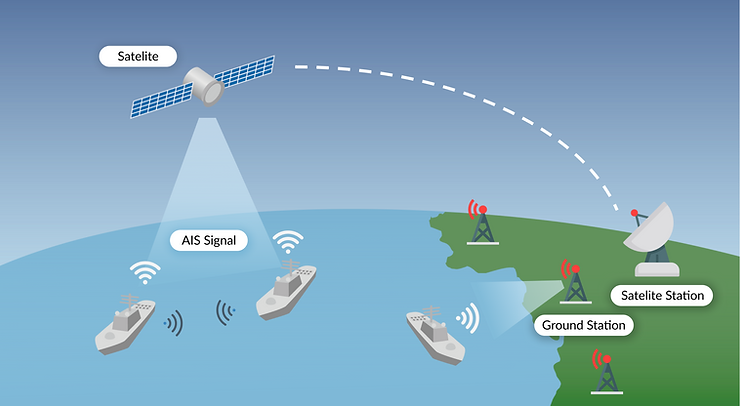

수출입 비즈니스와 관련이 있다면 ‘선박 추적’에 대해 들어보셨거나 직접 조회해 본 경험이 있으실 것입니다. 선박 위치 추적을 통해 내 화물 또는 고객의 화물이 지금 바다 위 어디쯤 있는지, 어느 경로로 가며, 어디에 경유하는지 등의 정보를 통해 결과적으로 화물이 언제 도착하는지 알기 원합니다. 또한, 해상 운송에서 빈번하게 발생하는 화물 지연과 변수 상황을 사전에 파악하고 물류계획에 차질이 없도록 대비하기 위함도 있을 것입니다.
이렇듯 물류 업계에서는 화물 운송 현황을 모니터링 할 수 있는 ‘공급망 가시화 플랫폼’의 필요성이 지속해서 증가하고
있으며, 이러한 해상 운송 가시화 플랫폼은 선박에서 일정하게 전송하는 ‘AIS 데이터’를 기반으로 하고 있습니다. 씨벤티지는
AIS 데이터의 신뢰도를 높이기 위해 검증 및 가공하여 활용하고 있으며, 전 세계 선박 및 항만 정보와 물류 데이터를 분석하여
실시간 운송 현황 및 물류 업무의 비효율을 개선할 수 있도록 지원하고 있습니다.
그렇다면, 선박 추적의 기반이 되는 AIS 데이터는 무엇인지 어떤 특징을 가지고 있으며 왜 데이터의 가공이 필요한지
알아보도록 하겠습니다.
AIS는 선박의 충돌을 방지하기 위한 도구로 개발되었으며, 육안으로 선박을 인식할 수 없는 상황에서도 다른 선박의 위치와 진행 경로 등을 파악하여 서로를 식별할 수 있도록 합니다. 국제해사기구(IMO) 선박안전법에 따르면 2004년 이후로는 총 300gt(톤)을 초과하는 선박은 AIS를 설치하도록 의무 사항으로 두고 있으며, AIS 정보는 이동 속도에 따라 2초 내지 3분 간격으로 지상수신기 또는 위성수신기로 전송됩니다.
 AIS 장비 종류 AIS 장비는 Class A와 Class B 두 종류로 구분됩니다.- Class A : 국제해사기구(IMO)의 AIS 탑재 요건을 만족하고, Class B 장비보다 더 높은 신호 전력과 빠른 주기로 송신하여 멀리 떨어진 선박에서 수신할 수 있습니다.
- Class B : Class A와 비교했을 때, 일부 기능만 제공하도록 설계되었으며 낮은 신호 전력과 속도로 송신하고 선박의 정적 정보는 표시되지 않습니다.
- 선박 충돌 방지 : 다른 선박과 통신하여 안전거리를 유지하고 충돌하는 것을 방지합니다.
- 항만 관제 : AIS 데이터를 수집하여 해상 교통량을 모니터링하고 항만관제에 활용합니다.
- 수색 및 구조 지원, 사고 조사 : 해양 사고 발생 시 수색, 구조 등을 지원하는 데에 쓰이고 있습니다.
AIS 데이터는 선박의 위치 정보뿐만 아니라 선박 제원과 관련된 정적정보, 항해 상태에 변화하는 동적정보, 항해 스케줄과 관련된 항해정보가 포함되어 있으며 매일 수천만 건 이상의 데이터가 수신되는 대용량 데이터입니다.
<참고 : AIS(자동식별시스템) 기술 개요 - 한국정보통신학회지> IMO 번호 (International Maritime Organization) 국제해사기구 등록번호 - 선박마다 부여하는 고유한 일련번호로 7자리 숫자로 이루어지며, 선박의 등록 및 추적에 사용됩니다. MMSI 번호(Maritime Mobile Service Identity)해상이동업무식별번호 - AIS 장비는 해상 전화번호라 할 수 있는 고유의 식별번호를 가집니다. MMSI 번호는 9자리 숫자이며 그 중 앞 3자리는 선박의 국가번호를 나타냅니다. AIS 데이터의 오류 "어째서 선박이 육지 위에 있는 것으로 보이는 걸까요?"AIS 데이터 오류는 크게 선박의 고유 정보가 중복되는 중복 오류와 GPS 장비 이상으로 발생하는 위치 오류로 구분할 수 있습니다. 오류가 발생하여 잘못된 AIS 정보가 지속하여 전송된다면 해당 정보를 업무에 활용하는 관제사, 항해사 또는 기업의 의사결정에 지장을 줄 수 있습니다. 따라서 신뢰도 높은 AIS 데이터를 활용하기 위해서는 데이터의 검증 및 가공이 필요하며 오류가 발생하는 각 요인에 대하여 원인과 예시를 살펴보겠습니다.
1. 중복 오류 (Duplicate Data Error) 또는 인적 오류 (Human Error)- 현상 : 선박의 고유식별정보가 두 척 이상의 배에서 전송되는 현상
- 원인 : 사람의 실수 또는 고의로 정보를 조작하여 고유식별정보가 중복됨
- 예시: 실수로 IMO, MMSI 정보를 잘못 입력한 경우, 국제적으로 제재된 선박들이 다른 선박의 IMO 번호를 도용하여 운항하는 경우
- 현상 : AIS 데이터의 위치 정보에 오류가 발생하는 현상
- 원인 : GPS 장비의 일시적 오류 또는 고장
- 예시: 선박의 실제 위치가 잘못 인식되는 경우
씨벤티지는 전 세계 30만 척 이상의 선박에 대한 AIS 데이터를 분석하여 선종/크기별 항적 데이터 학습 모델을 구축하였고 특허를 보유하고 있습니다. 구축된 학습 모델과 비교를 통해서 항로 이탈이나 서로 다른 지역에서 동시에 같은 식별번호의 AIS 데이터가 수신되는 등의 AIS 데이터 오류가 의심되는 선박을 자동으로 감지합니다.
<씨벤티지 해상 교통 네트워크>
씨벤티지에서는 머신러닝을 통해 학습 모델을 만들고 실시간으로 이상 데이터가 감지되면 오류 요인을 파악하여 조치하며, AIS
데이터의 신뢰도를 지속하여 높이고 있습니다. 가공된 높은 품질의 AIS 데이터는 물류 업계에서 필요로 하는 공급망 가시성 및
인사이트 플랫폼의 기반이 되며 ‘Data Insight’라는 서비스명으로 제공되고 있습니다.
AIS 데이터를 통해 과거 및 실시간 선박의 이동 경로, 위치, 속도, 도착시간(ETA, ATA) 등의 정보를 확인할 수 있으며, 항만
데이터와 함께 항구 혼잡도 분석에도 활용할 수 있습니다. 또한, 글로벌 물동량 및 물류 동향에 대한 통계와 인사이트
자료로써 활용될 수 있습니다. 대표적인 활용 사례로 KOTRA와 함께 ‘숫자로 보는 세계 70개 항구 적체 현황 리포트’를
제작하였으며, 다수의 기업에서 Data Insight 구독을 통해 의사결정에 필요한 정보를 얻고 있습니다.
지금까지 AIS 데이터와 데이터의 가공이 필요한 이유에 대해서 알아보았습니다. 높은 품질의 AIS 데이터로 해양 물류의 새로운 인사이트가 필요하시다면 언제든지 문의해주세요!